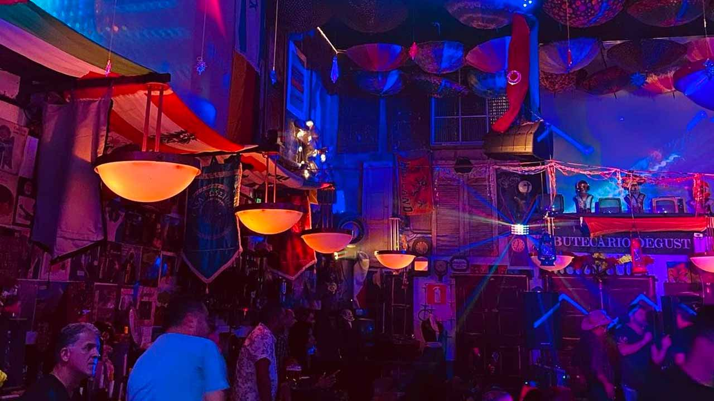

Os bares com música ao vivo em BH são responsáveis por encher a cidade de vida durante toda a semana. Por aqui, é possível encontrar opções que vão do samba raiz ao rock and roll, passando pela música popular brasileira e jazz. Se prepare para conhecer locais que reúnem o melhor da gastronomia e da música, nas principais regiões boêmias da cidade!

Confira os principais bares com música ao vivo em BH Canto de Mainha;
Encontrar bares com música ao vivo em BH não é uma tarefa difícil, afinal, Belo Horizonte é conhecida no Brasil inteiro por duas de suas características: ser a capital dos botecos e servir de berço para grandes talentos da música brasileira. Por isso, reunimos aqui os principais bares de BH, conhecidos por oferecer o melhor desses dois mundos
.E tem mais! O título de capital dos botecos não veio à toa. A fama é tão séria que alguns bairros e regiões de Belo Horizonte passaram a ficar conhecidos como pólos boêmios da cidade, justamente por concentrar um notável número de botequins.
Por esse motivo, vamos te mostrar quais são as principais opções de bares com música ao vivo em BH, divididos por cada região boêmia da cidade. Assim, você poderá escolher qual deles fica mais perto de você. Confira todos os detalhes na lista abaixo!
melhores restaurantes de bh